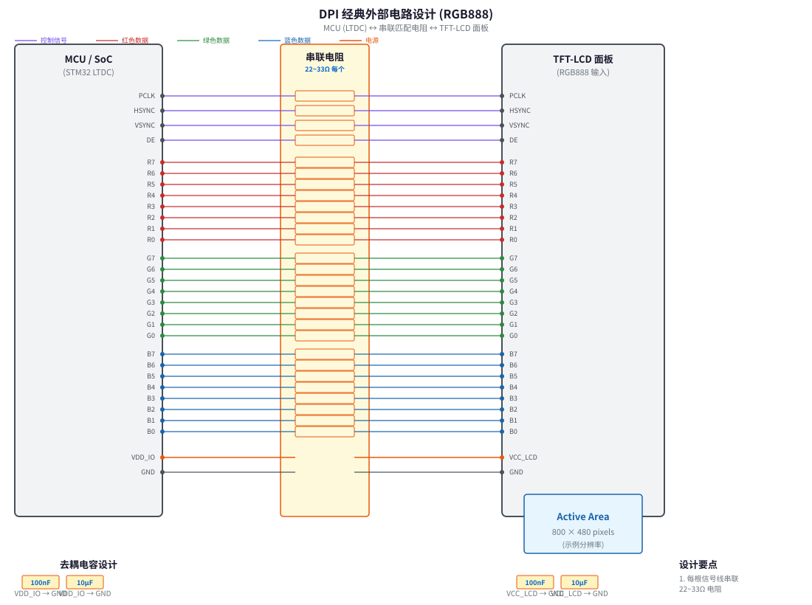
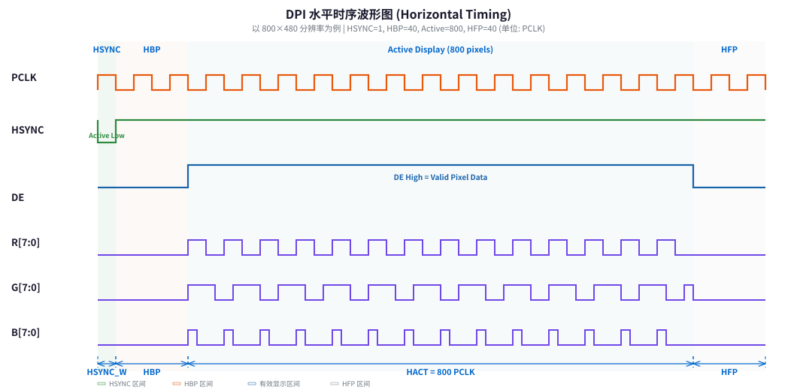
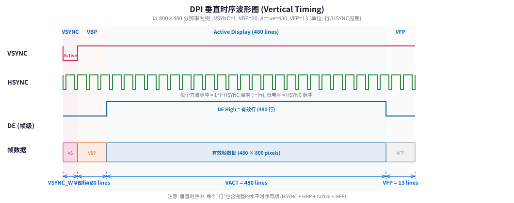
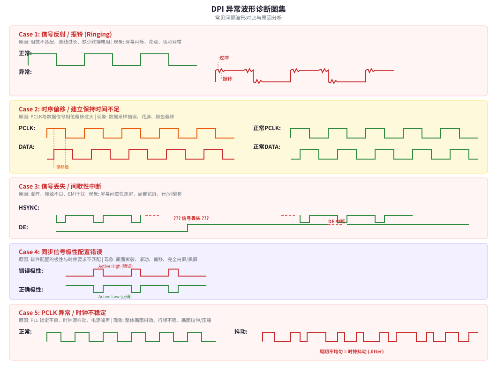

配置流程 / 电路设计 / 时序波形 / 信号完整性 / 调试指南
DPI（Display Pixel Interface）是一种并行 RGB 显示接口协议，由 MIPI Alliance 定义。在嵌入式领域，DPI 通常通过 MCU 内置的 LTDC（LCD-TFT Display Controller）外设实现，用于直接驱动 TFT-LCD 面板。它无需额外的显示控制器芯片，MCU 直接将帧缓冲区中的像素数据通过并行总线输出到 LCD。
| 信号名称 | 方向 | 功能说明 | 典型线数 |
|---|---|---|---|
PCLK | MCU → LCD | 像素时钟，每个时钟上升沿锁存一个像素数据 | 1 |
HSYNC | MCU → LCD | 水平同步信号，标识一行的开始 | 1 |
VSYNC | MCU → LCD | 垂直同步信号，标识一帧的开始 | 1 |
DE | MCU → LCD | 数据使能信号，高电平期间 RGB 数据有效 | 1 |
R[7:0] | MCU → LCD | 红色数据通道（RGB888 时为 8 位） | 8 / 5 / 6 |
G[7:0] | MCU → LCD | 绿色数据通道 | 8 / 6 / 6 |
B[7:0] | MCU → LCD | 蓝色数据通道 | 8 / 5 / 6 |
| 格式 | 数据线数 | 色深 | 典型应用 |
|---|---|---|---|
| RGB565 | 16 根 | 65K 色 | 低端 HMI、资源受限场景 |
| RGB666 | 18 根 | 262K 色 | 中端显示、工业面板 |
| RGB888 | 24 根 | 16.7M 色 | 高端 HMI、医疗/汽车显示 |
| ARGB8888 | 32 根 | 16.7M 色 + Alpha | 需要透明通道的叠加层 |
DPI 的完整配置涉及 GPIO 复用、LTDC 控制器、时钟系统、时序参数和帧缓冲区等多个环节。以下以 STM32 系列为主要参考平台进行说明（其他平台如 NXP i.MX、TI Sitara 等原理类似）。
DPI 信号通过 GPIO 的复用功能（Alternate Function, AF）引出。每个 DPI 信号对应特定的 GPIO 引脚和 AF 编号。
| 配置项 | 设置值 | 说明 |
|---|---|---|
| 模式 (Mode) | AF (复用功能) | GPIO 必须设为复用模式，不能是普通输入/输出 |
| 输出类型 (Output Type) | Push-Pull (推挽) | 标准推挽输出，提供足够的驱动能力 |
| 输出速度 (Speed) | Very High / Maximum | DPI 时钟频率高（可达 30~50MHz），必须使用最高速度档 |
| 上下拉 (Pull-up/down) | None (无) | 通常不启用内部上下拉，外部已有终端匹配 |
| AF 编号 | 查阅数据手册 | STM32F429 的 LTDC 使用 AF14；STM32F7/H7 也使用 AF14 |
/* GPIO 初始化示例 - 配置 PCLK 引脚 (PI14 为例) */
GPIO_InitTypeDef gpio_init = {0};
/* 1. 使能 GPIO 时钟 */
__HAL_RCC_GPIOI_CLK_ENABLE();
/* 2. 配置 GPIO 引脚 */
gpio_init.Pin = GPIO_PIN_14; // PI14 = LCD_CLK (PCLK)
gpio_init.Mode = GPIO_MODE_AF_PP; // 复用推挽输出
gpio_init.Pull = GPIO_NOPULL; // 无上下拉
gpio_init.Speed = GPIO_SPEED_FREQ_VERY_HIGH; // 最高输出速度
gpio_init.Alternate = GPIO_AF14_LTDC; // AF14 = LTDC 功能
HAL_GPIO_Init(GPIOI, &gpio_init);
/* 对 HSYNC, VSYNC, DE, R[0:7], G[0:7], B[0:7] 重复上述配置 */
/* 注意: 不同封装的引脚映射不同, 必须查阅具体型号的数据手册 */STM32CubeMX 可自动检查引脚冲突。当 RGB888 所需引脚不够时，可考虑降级为 RGB565 或使用外部 SDRAM 控制器释放部分引脚。
LTDC 是 STM32 中专门用于驱动 RGB 接口 LCD 的硬件控制器。它负责从帧缓冲区读取像素数据，并按照配置的时序参数生成 PCLK、HSYNC、VSYNC 和 DE 信号。
LTDC_HandleTypeDef hltdc = {0};
LTDC_LayerCfgTypeDef pLayerCfg = {0};
/* ===== LTDC 核心时序配置 ===== */
/* 这些参数必须从 LCD 面板的 Datasheet 中获取 */
hltdc.Init.HorizontalSync = 0; // HSYNC 宽度 - 1
hltdc.Init.VerticalSync = 0; // VSYNC 宽度 - 1
hltdc.Init.AccumulatedHBP = 40; // (HSYNC + HBP) - 1
hltdc.Init.AccumulatedVBP = 20; // (VSYNC + VBP) - 1
hltdc.Init.AccumulatedActiveW = 840; // (HSYNC + HBP + HACT) - 1
hltdc.Init.AccumulatedActiveH = 500; // (VSYNC + VBP + VACT) - 1
hltdc.Init.TotalWidth = 880; // (HSYNC+HBP+HACT+HFP) - 1
hltdc.Init.TotalHeigh = 513; // (VSYNC+VBP+VACT+VFP) - 1
/* ===== 极性配置 (根据 LCD 面板要求) ===== */
hltdc.Init.HSPolarity = LTDC_HSPOLARITY_AL; // HSYNC 低电平有效
hltdc.Init.VSPolarity = LTDC_VSPOLARITY_AL; // VSYNC 低电平有效
hltdc.Init.DEPolarity = LTDC_DEPOLARITY_AH; // DE 高电平有效
hltdc.Init.VSPolarity = LTDC_VSPOLARITY_AL;
hltdc.Init.PCPolarity = LTDC_IPCOREDRAW; // PCLK 极性: 不反相/反相
/* ===== 初始化 LTDC ===== */
HAL_LTDC_Init(&hltdc);PCLK 频率决定了像素刷新速率，是 DPI 配置中最关键的参数之一。
/*
* PCLK = HTotal × VTotal × 帧率
*
* 其中:
* HTotal = HSYNC + HBP + HACT + HFP (一行总像素数)
* VTotal = VSYNC + VBP + VACT + VFP (一帧总行数)
*
* 示例: 800×480 @ 60Hz
* HTotal = 1 + 40 + 800 + 40 = 881
* VTotal = 1 + 20 + 480 + 13 = 514
* PCLK = 881 × 514 × 60 = 27,135,240 Hz ≈ 27.1 MHz
*//* STM32F4/F7: LTDC 时钟通常来自 PLLSAI 或 PLLR */
RCC_PeriphCLKInitTypeDef periph_clk = {0};
periph_clk.PeriphClockSelection = RCC_PERIPHCLK_LTDC;
periph_clk.PLLSAI.PLLSAIN = 192; // PLLSAI 倍频系数
periph_clk.PLLSAI.PLLSAIR = 5; // LCD 时钟分频
periph_clk.PLLSAI.PLLSAIDIVR = RCC_PLLSAIDIVR_4; // 额外分频
HAL_RCCEx_PeriphCLKConfig(&periph_clk);
/* 实际 PCLK = (HSE/PLLM × PLLSAIN) / PLLSAIR / PLLSAIDIVR */
/* 需要精确计算使 PCLK 接近面板要求值 */时序参数必须从 LCD 面板的 Datasheet 中获取，不同面板的参数差异很大。以下是典型的参数含义和取值范围：
| 参数 | 含义 | 典型范围 (800×480) | 数据手册标识 |
|---|---|---|---|
HSYNC | 行同步脉冲宽度 (PCLK 周期数) | 1 ~ 80 | t_HSW, H_Width |
HBP | 行同步后肩 (Back Porch) | 1 ~ 100 | t_HBP |
HACT | 有效显示宽度 (像素数) | = 水平分辨率 | Display Width |
HFP | 行同步前肩 (Front Porch) | 1 ~ 100 | t_HFP |
VSYNC | 帧同步脉冲宽度 (行数) | 1 ~ 20 | t_VSW, V_Width |
VBP | 帧同步后肩 | 1 ~ 50 | t_VBP |
VACT | 有效显示高度 (行数) | = 垂直分辨率 | Display Height |
VFP | 帧同步前肩 | 1 ~ 30 | t_VFP |
LTDC 支持 双图层叠加（Layer 1 和 Layer 2），每个图层有独立的帧缓冲区和像素格式。
/* ===== 图层配置 ===== */
pLayerCfg.WindowX0 = 0; // 窗口左上角 X
pLayerCfg.WindowX1 = 800; // 窗口右下角 X
pLayerCfg.WindowY0 = 0; // 窗口左上角 Y
pLayerCfg.WindowY1 = 480; // 窗口右下角 Y
pLayerCfg.PixelFormat = LTDC_PIXEL_FORMAT_ARGB8888;
pLayerCfg.Alpha = 255; // 全局透明度 (255=不透明)
pLayerCfg.BlendingFactor1 = LTDC_BLENDING_FACTOR1_PAxCA;
pLayerCfg.BlendingFactor2 = LTDC_BLENDING_FACTOR2_PAxCA;
pLayerCfg.FBStartAdress = 0xC0000000; // 帧缓冲区起始地址 (SDRAM)
pLayerCfg.ImageWidth = 800;
pLayerCfg.ImageHeight = 480;
pLayerCfg.Backcolor.Red = 0;
pLayerCfg.Backcolor.Green = 0;
pLayerCfg.Backcolor.Blue = 0;
HAL_LTDC_ConfigLayer(&hltdc, &pLayerCfg, 0); // 配置 Layer 0
/* 使能 LTDC */
HAL_LTDC_Enable(&hltdc);0xC0000000）。使用内部 SRAM 仅适用于极小分辨率（如 QVGA 320×240）。对于 RGB888/ARGB8888 格式，一帧数据量 = 宽 × 高 × 4 字节，800×480 的 ARGB8888 需要约 1.5MB。

DPI 接口的引脚数量取决于颜色格式。以下是各格式所需的信号线数：
| 格式 | R 数据线 | G 数据线 | B 数据线 | 控制线 | 总计 |
|---|---|---|---|---|---|
| RGB565 | 5 (R4:R0) | 6 (G5:G0) | 5 (B4:B0) | 4 (PCLK+HS+VS+DE) | 20 |
| RGB666 | 6 (R5:R0) | 6 (G5:G0) | 6 (B5:B0) | 4 | 22 |
| RGB888 | 8 (R7:R0) | 8 (G7:G0) | 8 (B7:B0) | 4 | 28 |
由于 DPI 信号频率较高（PCLK 可达 30~50MHz），需要在信号路径上加入串联匹配电阻以抑制信号反射：
22~33Ω 电阻。阻值选择依据走线阻抗和负载电容计算。50~100Ω 下拉/上拉电阻，但需权衡功耗。100nF MLCC 去耦电容。10μF 钽电容或 MLCC，滤除低频纹波。100nF + 1μF 组合，确保高速翻转时的电流供给。背光驱动通常独立于 DPI 信号，但设计时需注意：
Rset 电阻设定电流值。1~20kHz。水平时序描述了一行内各信号的关系。以下波形图中，每个信号独立一行显示，避免重叠以便清晰分析。

| 阶段 | HSYNC | DE | 数据输出 | 说明 |
|---|---|---|---|---|
| HSYNC 脉冲 | Active (Low) | Inactive (Low) | 无效 | 通知 LCD 新一行开始 |
| HBP (后肩) | Inactive (High) | Inactive (Low) | 无效 | 等待期，让 LCD 电路准备 |
| Active (有效区) | Inactive (High) | Active (High) | 有效像素 | 每个 PCLK 输出一个像素的 RGB 数据 |
| HFP (前肩) | Inactive (High) | Inactive (Low) | 无效 | 行结束等待期 |
垂直时序描述了帧内各行的关系。在垂直方向上，VSYNC 标识新帧的开始，每个 HSYNC 周期对应一行。

一帧总时间 = (HTotal × VTotal) / PCLK
帧率 = PCLK / (HTotal × VTotal)
示例验证:
PCLK = 27.1 MHz
HTotal = 881, VTotal = 514
帧率 = 27,100,000 / (881 × 514) ≈ 59.9 Hz ≈ 60Hz ✓使用示波器分析 DPI 波形时，按以下步骤进行：
测量 PCLK 的实际频率，与理论值对比。偏差应 < ±2%。如果偏差过大，检查 PLL 配置和时钟源精度。
使用示波器的光标功能测量 HSYNC 脉宽、周期，验证是否与配置参数一致。HSYNC 周期 = HTotal / PCLK。
DE 的上升沿应在 HSYNC 下降沿之后 HSYNC_W + HBP 个 PCLK 周期出现。DE 宽度应等于 HACT 个 PCLK 周期。
使用 PCLK 作为触发源，用双通道示波器同时观察 PCLK 和任意数据线。测量数据翻转沿到 PCLK 采样沿的时间差。
观察信号边沿是否有过冲、振铃、缓变等异常。测量信号的高低电平是否在规范范围内（VOH ≥ 2.4V, VOL ≤ 0.4V @3.3V IO）。
以下是 DPI 调试中最常见的异常波形及其诊断方法：

| 波形特征 | 可能原因 | 解决方案 |
|---|---|---|
| 信号边沿出现振荡、过冲超过电源轨 | 阻抗不匹配、走线过长、缺少串联电阻 | 增加串联匹配电阻（22~33Ω）、缩短走线、检查 PCB 阻抗控制 |
| 振铃衰减缓慢 | 负载电容过大、走线特征阻抗偏差 | 减小走线长度、检查过孔数量、验证 PCB 叠层阻抗 |
| 波形特征 | 可能原因 | 解决方案 |
|---|---|---|
| 数据线相对 PCLK 有明显延迟偏移 | 走线长度差异大、不同信号层走线 | 等长匹配走线、PCLK 与数据线在同一信号层、误差 ≤ 50mil |
| 数据在 PCLK 采样沿附近翻转 | PCLK 极性配置错误 | 调整 PCPolarity 参数（切换上升/下降沿采样） |
| 波形特征 | 可能原因 | 解决方案 |
|---|---|---|
| HSYNC/DE 出现间歇性消失 | 虚焊、FPC 接触不良、DMA 传输错误 | 检查焊接质量、重新插拔 FPC、验证 DMA 配置和中断优先级 |
| 部分数据线恒定高/低 | 引脚虚焊、GPIO AF 配置错误 | 逐引脚测量通断、复查 AF 配置代码 |
| 波形特征 | 可能原因 | 解决方案 |
|---|---|---|
| HSYNC/VSYNC 极性与 LCD 要求相反 | 软件配置 HSPolarity/VSPolarity 错误 | 查阅 LCD Datasheet，修正极性配置 |
| DE 极性与预期不符 | 同上 | 修正 DEPolarity 配置 |
| 波形特征 | 可能原因 | 解决方案 |
|---|---|---|
| PCLK 周期不均匀（抖动） | PLL 未锁定、电源噪声耦合到时钟线 | 检查 PLL 锁定状态位、时钟线远离噪声源、增加去耦电容 |
| PCLK 幅值不足 | IO 电压不匹配、负载过重 | 检查 VDD_IO 电压、确认 LCD 端输入阻抗 |
DPI 接口虽然不如 LVDS/MIPI DSI 那样高速，但在 30~50MHz PCLK 频率下，PCB 设计不当仍然会导致严重的信号完整性问题。
| 设计要点 | 具体要求 | 备注 |
|---|---|---|
| 阻抗控制 | 单端 50Ω ± 10% | 使用 PCB 厂商的阻抗计算工具确认叠层 |
| 等长匹配 | PCLK 与数据线长度差 ≤ 50mil (1.27mm) | 所有数据线之间也需要等长匹配 |
| 走线层 | PCLK 和数据线在同一信号层 | 避免换层引入的阻抗不连续 |
| 参考平面 | 信号走线下方必须有完整地平面 | 不要跨越地平面分割缝 |
| 线间距 | ≥ 2 倍线宽 (2W) | 减少线间串扰 |
| 与时钟线隔离 | PCLK 两侧加地线保护 (GND-Signal-GND) | 控制信号(HSYNC/VSYNC/DE)与数据线分开走线 |
| 过孔 | 尽量减少过孔数量 | 每个过孔引入约 0.5pF 寄生电容 |
| 连接器 | FPC 连接器引脚接地设计 | 每隔 3~5 个信号引脚设置一个 GND 引脚 |
磁珠（Ferrite Bead）（如 600Ω@100MHz），滤除高频谐波。| 序号 | 故障现象 | 可能原因 | 排查方法 |
|---|---|---|---|
| 1 | 完全白屏/黑屏 | LTDC 未使能、PCLK 无输出、背光未开启 | 用示波器检查 PCLK 是否有输出；检查 LTDC_GCR 的 LTDCEN 位；检查背光 PWM |
| 2 | 花屏 (雪花/杂色) | 时序参数错误、帧缓冲区地址错误、SDRAM 初始化失败 | 核对时序参数与 LCD Datasheet；验证 SDRAM 读写正确性 |
| 3 | 画面偏移/滚动 | HSYNC/VSYNC 极性错误、HBP/VBP 参数错误 | 调整极性配置；逐步修改 HBP/VBP 观察效果 |
| 4 | 画面撕裂 | 帧缓冲区切换不同步 | 使用 Line End Interrupt 在消隐期切换帧缓冲区；启用双缓冲 |
| 5 | 颜色偏移/色偏 | RGB 数据线顺序接反（如 R 和 B 对调） | 检查硬件连线；在软件中交换颜色通道测试 |
| 6 | 画面闪烁 | PCLK 不稳定、背光 PWM 频率过低 | 测量 PCLK 稳定性；提高背光 PWM 频率至 >1kHz |
| 7 | 部分区域显示异常 | 窗口配置错误 (WindowX0/X1/Y0/Y1) | 检查图层窗口配置是否与帧缓冲区尺寸匹配 |
| 8 | 显示有竖线/横线 | 个别数据线虚焊或串扰 | 用示波器逐线检查；用万用表测量通断 |
| 特性 | DPI (RGB) | DSI (MIPI) | DBI (SPI/并行) | LVDS |
|---|---|---|---|---|
| 信号类型 | 并行 TTL | 差分串行 | 并行/串行 | 差分串行 |
| 数据线数 | 16~24 根 | 1~4 Lane | 1~16 根 | 3~4 对差分 |
| 最大分辨率 | ~1920×1080 | ~4K | ~320×240 | ~1920×1080 |
| 时钟频率 | 30~150 MHz | 最高 2.5Gbps/lane | ~50 MHz | ~400MHz (DDR) |
| 走线距离 | < 10cm (PCB内) | < 30cm | < 5cm | < 30cm |
| EMI 特性 | 较差 (单端信号) | 优秀 (差分信号) | 一般 | 优秀 |
| MCU 资源占用 | 高 (大量 GPIO) | 低 (专用控制器) | 低 | 中 |
| 典型应用 | 中低端 HMI、工业面板 | 手机、平板、高端 HMI | 小尺寸 OLED/LCD | 笔记本、车载显示 |
| 成本 | 低 (无需额外 IC) | 高 (需 DSI 接口 LCD) | 低 | 中 |
以下为 STM32 LTDC 外设的核心寄存器（以 STM32F4/F7/H7 系列为例）：
| 寄存器 | 名称 | 关键字段 | 功能说明 |
|---|---|---|---|
LTDC_SSCR | Synchronization Size Configuration | HSW, VSH | 配置 HSYNC/VSYNC 脉冲宽度 |
LTDC_BPCR | Back Porch Configuration | AHBP, AVBP | 配置后肩尺寸 (HSYNC+HBP, VSYNC+VBP) |
LTDC_AWCR | Active Width Configuration | AAW, AAH | 配置有效显示区域 (HSYNC+HBP+HACT) |
LTDC_TWCR | Total Width Configuration | TOTALW, TOTALH | 配置总尺寸 (含所有 Porch) |
LTDC_GCR | Global Control | LTDCEN, DBW, DGW, DRW | LTDC 使能、抖动使能、颜色宽度 |
LTDC_SRCR | Shadow Reload Configuration | IMR, VBR | 配置寄存器重载时机 (立即/帧末) |
LTDC_LxCR | Layer x Control | LEN | 图层使能 |
LTDC_LxWHPCR | Layer Window Horizontal Position | WHSTPOS, WHSPPOS | 图层水平窗口位置 |
LTDC_LxWVPCR | Layer Window Vertical Position | WVSTPOS, WVSPPOS | 图层垂直窗口位置 |
LTDC_LxPFCR | Layer Pixel Format Configuration | PF | 像素格式 (ARGB8888/RGB888/RGB565等) |
LTDC_LxCFBAR | Layer Color Frame Buffer Address | FBADD | 帧缓冲区起始地址 |
LTDC_LxCFBLR | Layer Color Frame Buffer Length | CBLL, CFBLL | 帧缓冲区行长度和总长度 |
LTDC_IER | Interrupt Enable | RRIM, LIIM, ERIM, FMIM | 中断使能 (重载、行中断、错误、帧同步) |
LTDC_ISR | Interrupt Status | RRIF, LIF, EIF, FMIF | 中断状态标志 |
LTDC_SRCR 触发重载。选择 IMR=1 立即重载（可能引起画面撕裂）或 VBR=1 在帧末重载（安全切换）。